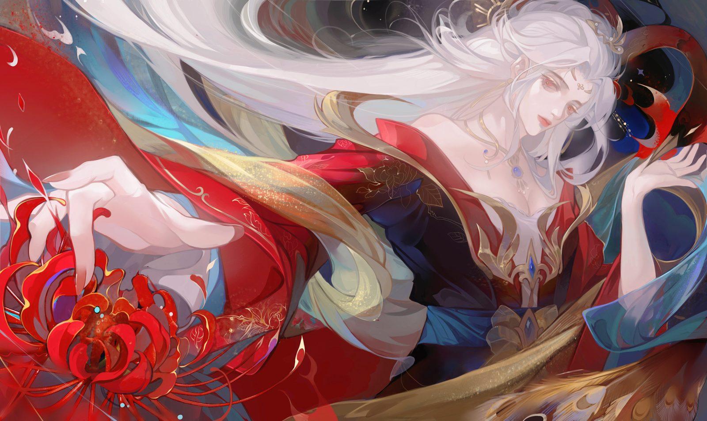

Project overview
As a freelance illustrator from 2019 to 2025, I worked with different clients and adapted my drawing methods to meet different needs. In the process, my soft and hard skills both improved substantially.


Personal & commissioned work
2023 and 2024 personal design and game-character illustrations were private, paid commissions.
RCA team work — storyboard
Illustrated with the assistance of AI tools, this storyboard captures a dystopian future in a flooded Westminster — a homeless character navigating rain-soaked, trash-filled streets, exploring survival and hope in a decaying city. It's the visual companion to the Entropy project.
RCA team work — scene design
Scenes representing a future flooded urban environment, filled with waste and pollution. The protagonist trudges through desolate waters, exploring the lost city and trying to restore balance to the environment — light, composition and character interaction building the heaviness of apocalyptic ruins alongside a glimmer of hope.
Edog project — storyboard
Since all data is stored on the internet, why can't we create a new experience — letting deceased pets "live on" online, so that when I come home, they can come out to greet me just like they used to? The visual concept work for Edog.